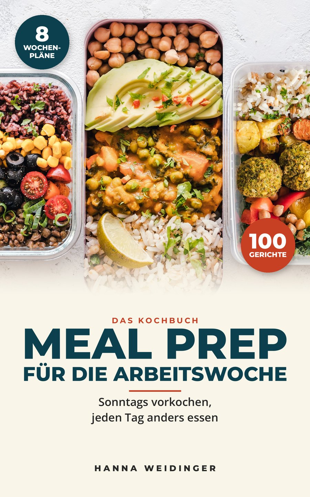

Mo
Zucchini-Reispfanne
Montag im Reel: „Zucchini-Reispfanne“. Der Clip zeigt das Schneiden einer Zucchini, nicht die fertige Pfanne.
Kühlschrank-Plan · Folge 1 (zum Reel) · Plan Nr. 2
Was liegt noch in deinem Kühlschrank? Aus dem, was schon da ist, wird ein 3-Tage-Plan – so steht es in Folge 1 der Reihe „Dein Kühlschrank, mein Plan“.
Was diese Seite enthält – und was nicht: Hier steht nur, was das Reel selbst zeigt: die Beispiel-Reste und die drei Gerichtsnamen für Montag bis Mittwoch. Im Reel-Material gibt es keine Grammangaben, keine Kochschritte und keine Zeiten. Die ergänze ich hier nicht. Die Bilder im Reel sind Pexels-Clips zur Stimmung, nicht Fotos der fertigen Beispielgerichte.
Zum Posten: Das zugehörige TikTok-Reel ist für den 23. November 2026 ab 18:30 (Europe/Vienna) vorgesehen. Ein Link zum veröffentlichten Video steht deshalb noch nicht auf dieser Seite.
Was schon da ist
So lautet die Liste im Reel und in der Caption. Das ist keine Einkaufsliste, sondern das, was in diesem Beispiel noch im Kühlschrank liegt.
Weitere Zutaten (Öl, Salz, Gewürze oder Beilagen) nennt das Reel nicht. Deshalb stehen sie hier auch nicht.
Mein 3-Tage-Plan
Die Bezeichnungen stehen wortgleich als Text im Video. Darunter liegt jeweils ein Pexels-Clip zur Szene, nicht das fertige Gericht.
Mo
Montag im Reel: „Zucchini-Reispfanne“. Der Clip zeigt das Schneiden einer Zucchini, nicht die fertige Pfanne.
Di
Dienstag im Reel: „Frittata mit Feta“. Der Clip zeigt verquirlte Eier und geschnittenes Gemüse, nicht die fertige Frittata.
Mi
Mittwoch im Reel: „Reis-Bowl mit Gemüse“. So steht der Titel im Video; Tomaten gehören zur Resteliste, sind im Mittwoch-Titel aber nicht genannt.
Die Idee der Reihe steht am Ende des Reels: Schreib deinen Kühlschrank in die Kommentare. Ich mach dir den Plan. Dieser Seite liegt das Beispiel aus Folge 1 zugrunde, nicht ein individueller Kommentar.
Die Reihe
Dieser 3-Tage-Plan ist das Beispiel aus dem Reel und kein abgeschriebenes Buchrezept. Hier sind die derzeit lieferbaren Titel der Reihe, mit echten Amazon-Links. Ein weiterer Band zum Thema Meal Prep folgt nach dem 10. Dezember 2026.

Band 1
Schnelle Alltagsrezepte, ein 28-Tage-Plan und fertige Einkaufslisten.

Band 2
Alltagstaugliche Rezepte, 28-Tage-Plan und fertige Einkaufslisten.

Band 3
Alltagsrezepte, 28-Tage-Plan und Einkaufslisten für die Woche.

Band 4
Eiweißreiche Alltagsrezepte ohne Pulver und ohne Shakes, mit 28-Tage-Plan und Einkaufslisten.

Band 5
Rezepte für große Portionen, 28-Tage-Plan und Einkaufslisten.

Band 6
Rezepte mit 30 g Eiweiß je Hauptmahlzeit, Calciumwert je Rezept, 28-Tage-Plan und Einkaufslisten, ohne Pulver.

Band 7
Das Kochbuch mit 8 Wochenplänen und 100 Gerichten: sonntags vorkochen, jeden Tag anders.
Auf der Amazon-Serienseite siehst du alle zugeordneten Bände im Überblick.
Bitte beachten
Die Bücher und diese Seite ersetzen keine medizinische oder ernährungstherapeutische Beratung. Bei gesundheitlichen Fragen wende dich an eine Ärztin, einen Arzt oder eine qualifizierte Fachperson.
Texte auf dieser Seite und die Bücher der Reihe sind unter Verwendung digitaler Werkzeuge entstanden.